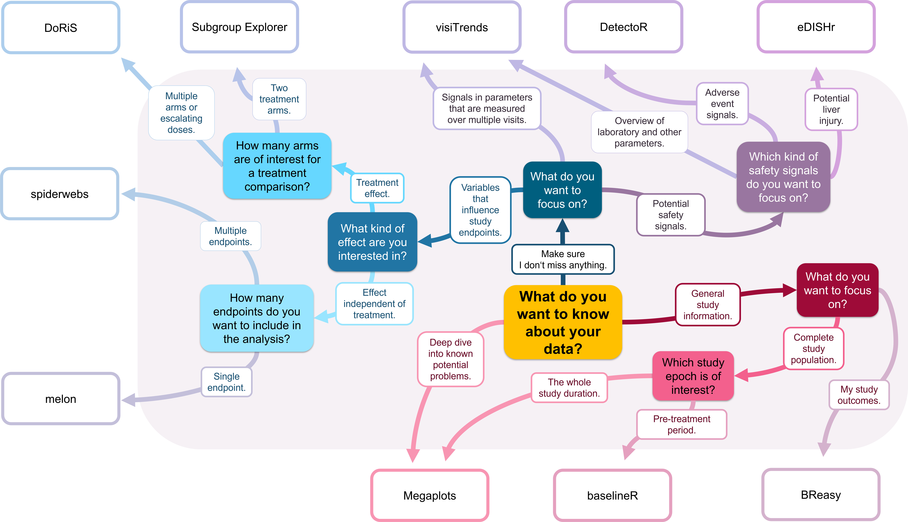

D·I·G deeper! Have you been asked for yet another table, listing or figure to answer a specific study question?
Discover whether a D·I·G app is the better solution and see how the right visualization can transform a question into an insight.
What is D·I·G? A Data Insight Generation (D·I·G) meeting at Bayer is conducted as a cross‑functional, highly interactive data‑review session in which the study team and D·I·G presenters jointly explore the clinical data using specialized visualization apps.
This collaborative approach helps uncover unexpected patterns, trends, and relationships.
